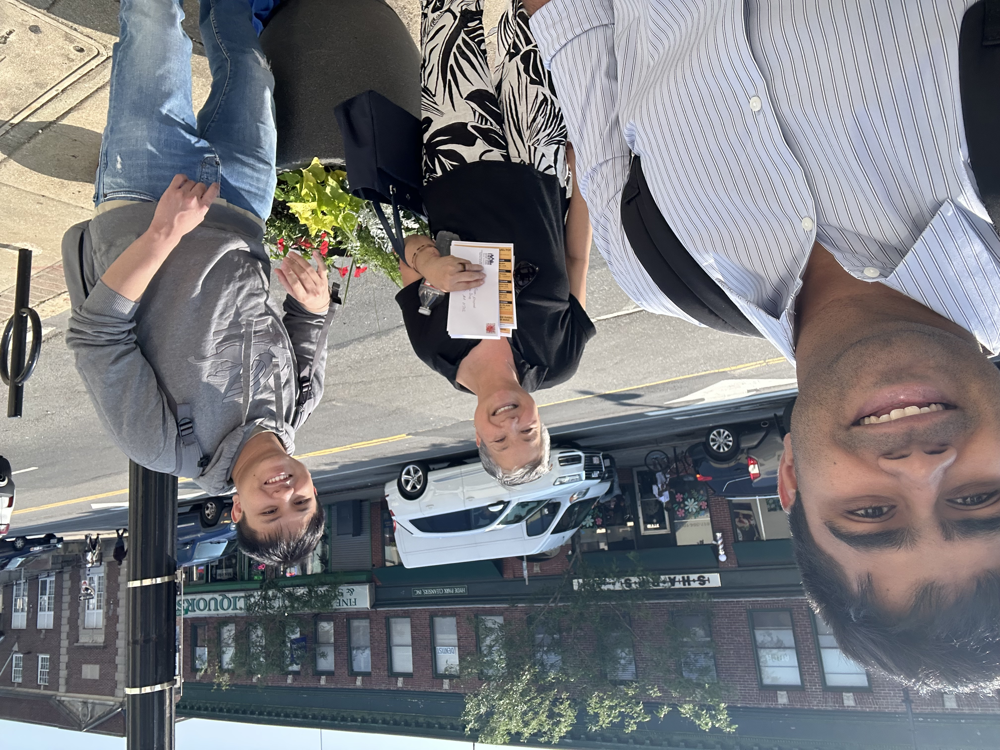
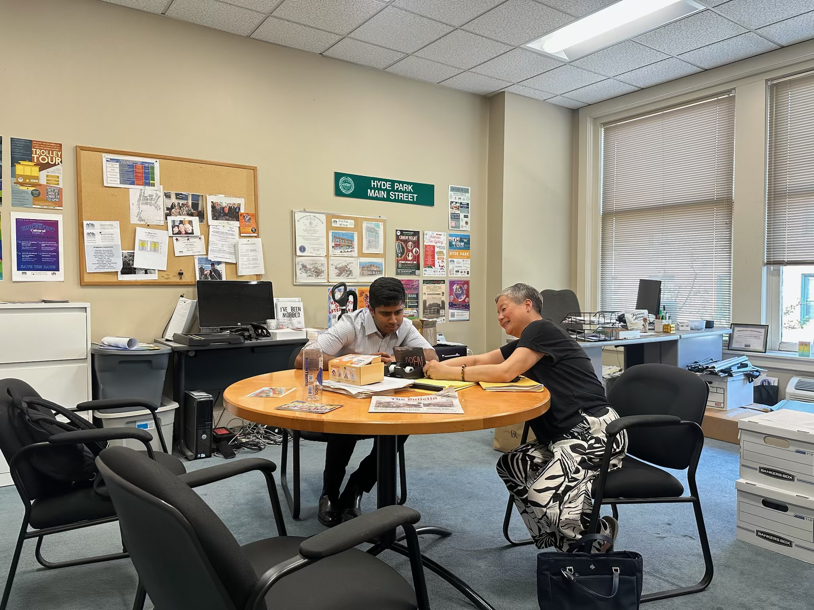
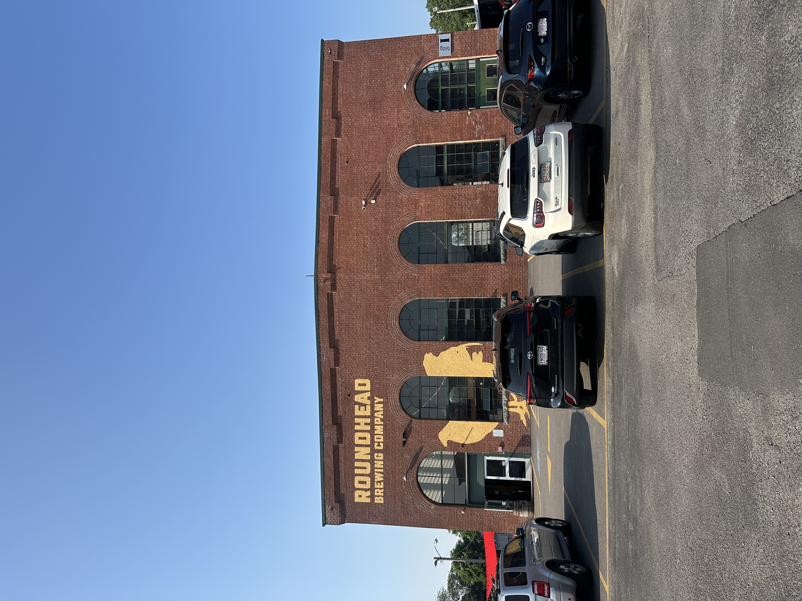
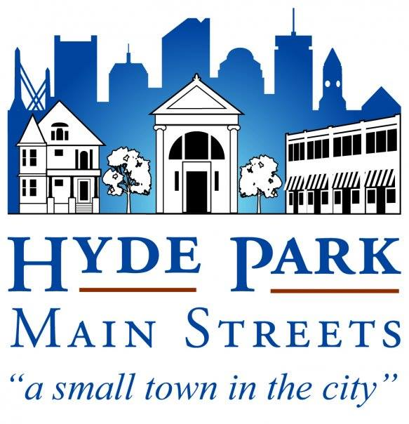

On the Ground
A few moments from the work on site with Hyde Park Main Streets, where the strategy came together in conversation, not on a slide.





Hyde Park Main Streets is a community organization keeping Boston's Hyde Park neighborhood vibrant for local businesses and residents. Like many nonprofits running on volunteer energy and tight resources, they had reached a point where their growth ambition was outpacing their structure. The board wanted to bring in new people, expand programs, and strengthen the organization's long-term direction, but lacked a clear framework for deciding what to say yes to and what to leave behind. Volunteer recruitment had plateaued. Decisions were being made initiative by initiative without a shared strategic lens. They needed an outside perspective to help organize, prioritize, and plan.
Our consulting team came in as a small group of graduate students with backgrounds in business analytics, brand management, international management, and organizational leadership. The work moved across three connected pieces.
The first was understanding the organization from the inside. I worked with the Executive Director and board leadership through structured interviews to surface what each person believed the organization's core priorities should be, what was working, and what was getting in the way. Those interviews became the raw material for everything that followed.
The second piece was building a board vision and goal framework. The output was essentially a matrix that mapped every active initiative against the organization's strategic priorities, so leadership could evaluate any new opportunity against the same set of criteria instead of judging each one in isolation. That single tool changed how decisions could get made.
The third piece was the volunteer recruitment strategy. I dug into who the organization was currently reaching and identified three underutilized pipelines: local schools (community service hours create a natural exchange), seniors (often overlooked but among the most committed volunteers), and renters (a large share of Hyde Park residents who tended to feel disconnected from neighborhood initiatives). Alongside the strategy, I delivered a six-month implementation roadmap with monthly milestones so the Executive Director had something concrete to execute against.
A few moments from the work on site with Hyde Park Main Streets, where the strategy came together in conversation, not on a slide.


